TerraYou · 2021 to 2026
A library for the self
What if a personality test felt less like an exam and more like a good library?
That was the idea behind TerraYou, a self-development platform that grew from two languages to four. I joined before it had a name and spent five years shaping its visual identity and digital experience, from the early website to premium reports and a mobile app.
The model was simple. You take a test, get a free result, and can unlock a detailed premium report.
My part changed as the product grew. The brand was mine from the start: the logo, the brand guide, the visual language. The website interface came next. On the reports, I helped lead the direction alongside the design team, and by the time the app arrived, I was guiding its look and its foundations.
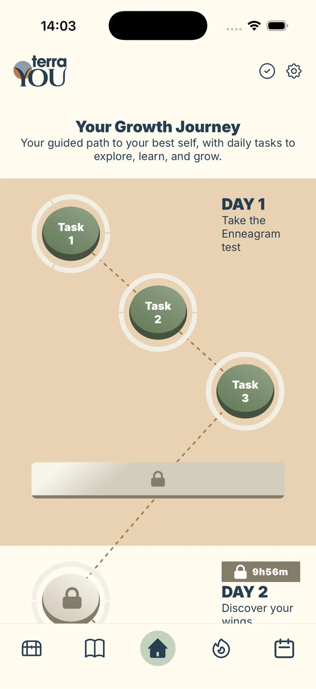
02 / The concept
A space for curiosity
A test about your stress levels or your personality asks for a lot of honesty. The starting point wasn’t a feature list. It was a feeling: the calm of a library, where learning about yourself is something you choose, not something you’re graded on.
The design challenge was keeping it all one place. Different tests, articles, reports, and later an app, each launched at its own time, still had to look and feel like the same library. Four ideas held it together.
-
01 / The brand
Somewhere to learn, not to be tested
A welcoming space for learning, reflection, and self-discovery. Closer to a reading room than to a waiting room.
-
02 / The customers
Curious, not clinical
People who want to understand themselves and grow. So the visual language borrowed from books and classrooms, never from a doctor’s office.
-
03 / The products
Every test is a chapter
Each test reveals one more piece of the self, and gets its own name inside the brand, so the shelf can keep growing without turning into a pile.
-
04 / The pillars
Three ways in
Discovery, Balance, and Growth. Every test lives in one of them, which gives people a simple first question: what do you want to work on?
It’s a library, so it’s made of paper
Layered paper cut-outs became the platform’s signature: on the homepage, in each pillar’s illustration, across the category headers. They give flat screens a little depth and a handmade warmth, and they keep pointing back to books.
03 / The brand system
Grounded, then growing
The logo had to hold the whole idea in two words and a circle. It was one of the first things I designed for TerraYou.
A logo is the easy part. The brand guide did the quieter work: keeping a catalog of tests, launched one after another, in one recognizable family.
The Sage
Wise but warm, assured but curious.
- Wise
- Warm
- Guiding
- Knowledgeable
- Assured
- Curious
- Trustworthy
- Encouraging
- Informative
The Sage
One family, four forms
A main logo, a horizontal version for tight spaces, an icon for small sizes and the app, and a product logo that gives every test its own name. Each comes in a light and a dark version.
Room to breathe
Every form keeps a minimum clear space, measured from its own height (x). A quarter of x for the main logo, horizontal logo, and icon. Half of x for product logos, which sit next to busier content.
A palette with jobs
A deep navy carries the type. Three pillar colors guide people through the platform. Softer complementary tones keep long pages calm.
- Main
- Navy#263D4FType, headers, footers
- White#FFFFFFSpace, and the logo on dark
- Pillars
- Discovery#C48F45Ochre
- Balance#C47545Terracotta
- Growth#8F9CABDusty blue
- Complementary
- Sage#90A186
- Cream#F1EEE5
- Blush#CCAEA3
Three voices
Kudryashev Display, a high-contrast serif, gives headlines an editorial, reflective tone. The interface started in Interstate and later moved to Inter, which reads better at small sizes and could be licensed for the app. ITC Avant Garde Gothic sets the product names.
Headlines · Decorative
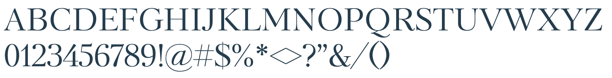
High contrast, editorial, a little bookish, set in its Contrast style.
Interface · Web
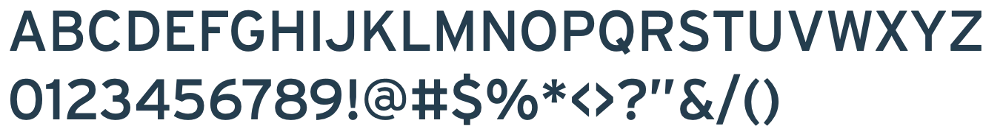
Thin to Black, with italics. Later replaced by Inter for readability and app licensing.
Product names
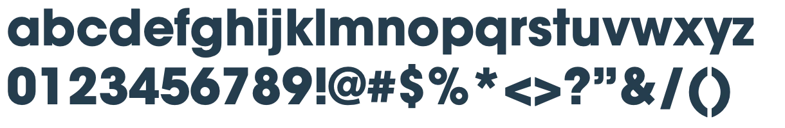
Bold, lowercase, next to the logo: “terraYOU | archetype”.
Where the logo can live
The guide is specific about backgrounds. Pick one from each side and see why.
Light backgrounds take the standard navy logo.
✓ Do
✕ Don’t
04 / Mapping the journey
Seven screens to a report
The MVP had a simple job: get someone from finding a test to wanting the full report. Seven screens, from the homepage to the premium report.
Then came the catch. The free result was paid for by ads, and the premium report was the product. So every flow existed twice: one for people who found TerraYou on their own, and one for people arriving from ad campaigns.
The campaign version carried banner, sticky, and rewarded placements, each labeled so developers could plug in the right ad code.
Later, the product owner pulled ads from the two moments that mattered most: the completion page and the paid result. Nobody who just paid for a report should land on a banner. I reworked the flows around that decision, and cross-promotions for other tests took the empty spots.
Simplified. Ads are shown as a band, not mapped to exact screens.
From structure to interface
Same seven steps, before and after. Drag to compare.
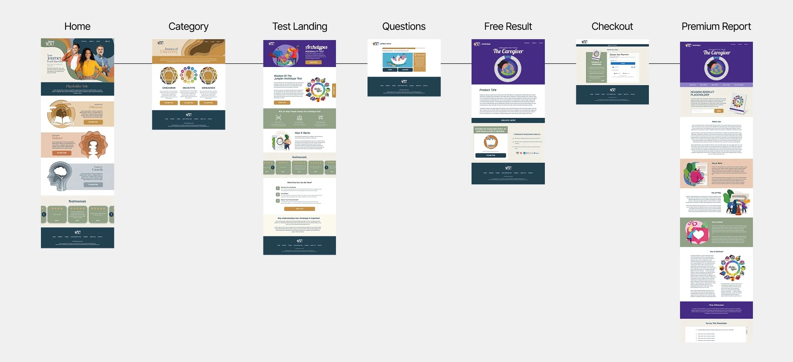
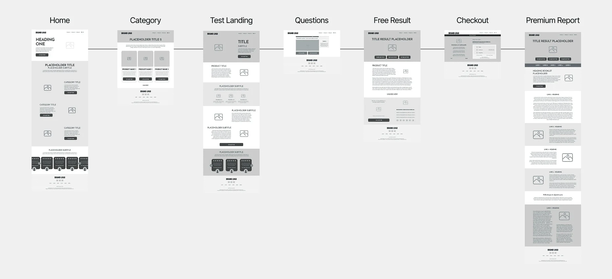
05 / The MVP
One color for each path
This is where the logo started doing real work. On a test page, the circle behind the “Y” takes on its pillar’s color, and so do the progress bar and the tips. It’s a small cue, but it means you always know which path you’re on, even in the middle of a test.
The question page also had to work in both flows from the previous chapter. One layout rule held for both: everything needed to answer had to be visible without scrolling.
In the campaign flow, an ad took the spot where the “Did you know?” box sat, and the tip moved down, where the article card usually was. On mobile, the ad went between the question image and the answer buttons, so it stayed in view for as long as possible.
Tests in this pillar
I am happy to step up and take a leadership role in group situations
Did you know?
Read the article ›
- Product logoThe circle shows the pillar
- Progress barFollows the pillar color
- Did you know?Same color, same path
Recreation of the question page from the TerraYou product design file in Figma. Tip text is shown as neutral lines. Question and article title from the design file.
Before launch
Every product went through QA on a staging site, in both languages. My part was design quality, everywhere, on desktop and mobile.
Checking the build against the designs, flagging UX and UI issues, and making sure every asset landed where it belonged. In practice: annotated screenshots, type fixes, and a lot of side-by-side comparisons.
06 / Growing the product
Launch was the easy part
After launch, the catalog kept growing and the product kept asking for new things. The challenge was making each addition look like it had always been there.
- Error pages
Page not found and something went wrong, in both languages, so even a dead end still feels like TerraYou.
- Result breakdown
One score split into several charts, each with its own color, so people can see what sits behind the number.
- Answer blocks on mobile
Answer buttons that hold long text without breaking, so every option stays readable and easy to tap.
- Profile page
A place for people to come back to their tests and results.
- B2B product page
A page presenting TerraYou’s tests to recruiting companies.
- Post-purchase survey
A short survey at the end of checkout, to hear from people right after they bought.
- Gift cards
A gift card system, so a test could be given to someone else.
- Subscriptions
A subscription system, alongside one-off purchases.
- Report redesigns
New designs for several of the premium report products.
- Apps for campaign channels
Apps built for the incentivized campaign channels.
- A younger audience
A new positioning for a younger audience: Real Quiz Hero.
- Language expansion
From English and German to French and Spanish, with every screen and report following.
And much more.
07 / From files to a system
One source for everyone
The MVP’s speed had a price: one Adobe XD file per flow, and a lot of copying between them. As the platform grew, I helped move the work into Figma, with shared libraries, reusable Tailwind-based components, and design tokens.
The idea was simple. Designers and developers work from the same source, and a new test looks like TerraYou from day one.
- Where we startedAdobe XDOne file per flow and product
- FigmaOne place for all of it
- Shared librariesOne brand, many products
- Tailwind componentsCloser to the code
- Where we ended upDesign tokensShared by design and code
08 / Premium reports
A report you’d want to read
A score on its own doesn’t say much. The premium reports turned it into something worth reading.
Working with the design team, I helped lead their direction and structure. Each test got its own report, from personality profiles to an IQ certificate and an interactive workbook, built to hold each reader’s own results. The illustrations came from stock libraries; the page compositions are mine.
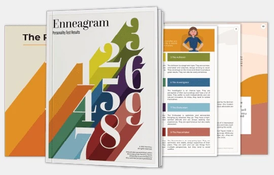
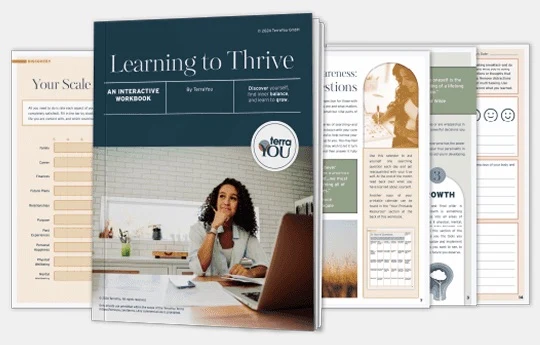
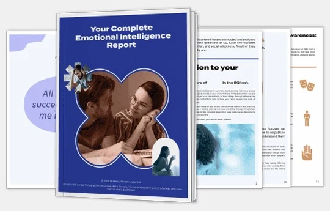
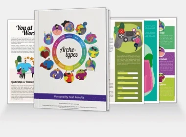
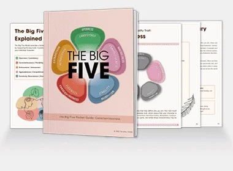
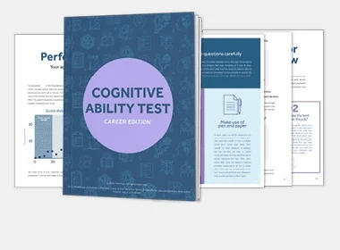
09 / The app
The same library, in your pocket
Eventually TerraYou outgrew one-off tests. The app was built to take on the demand from incentivized campaign channels, and it turned self-discovery into a daily habit: growth journeys that unlock day by day, habit tracking, daily coaching cards, a vault for past results, and an article library.
Working with the design team, I helped guide its visual direction and UI foundations, so it would feel like TerraYou and not a spin-off. It launched on iOS and Google Play.
10 / Learnings & growth
Five years, a different perspective
Working on TerraYou for five years gave me the chance to see which design decisions stood the test of time and which ones I would approach differently today.
Some choices, like giving each pillar its own color, became a lasting part of the experience, connecting the brand, website, tests, and app. Others haven’t aged as well, and looking back, I can see how much my visual judgment and creative standards have evolved.
TerraYou taught me to work within real constraints, build systems that grow with a product, and adapt as both the product and the team changed.
Not every decision is one I would make again, but each one helped shape the designer I am today.